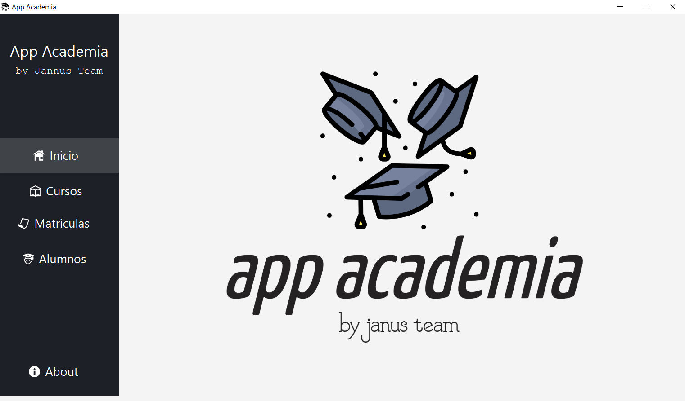

APP ACADEMIA: INICIO

Nos encontramos en el menú principal. Este es el que aparece una vez cargada e iniciada la aplicación. Se puede observar el logo de la aplicación, el nombre y el equipo encargado de su creación. Además, en la parte izquierda de la pantalla, se encuentra el menú de la aplicación, el cual permite acceder a las distintas pestañas de la misma:
Curso: esta pestaña permitirá dar de alta un nuevo curso.
Matricula: esta pestaña permitirá dar de alta una nueva matriculación de un alumno ya matriculado, o incluso dar de alta a un nuevo alumno junto a su matrícula.
Alumnos: esta pestaña nos ofrece la visualización de la información de los alumnos dados de alta en la aplicación, además de poder buscar al alumno/a que se necesite, editar la información de un alumno/a y la eliminación del mismo/a.
La pestaña de Inicio nos llevará a la pantalla que vemos en la primera imagen de este documento. Por último, nos encontramos con la pestaña de About, en la que aparece información de la aplicación, tal como la versión en la que se encuentra la aplicación, los desarrolladores de esta, su contacto, entre otros.